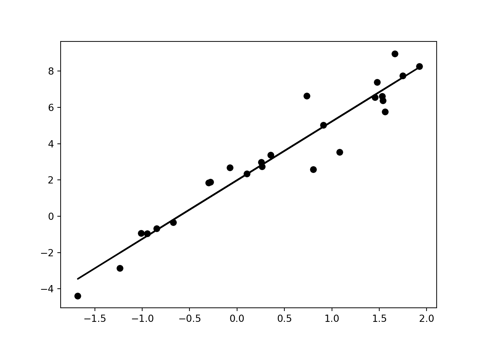
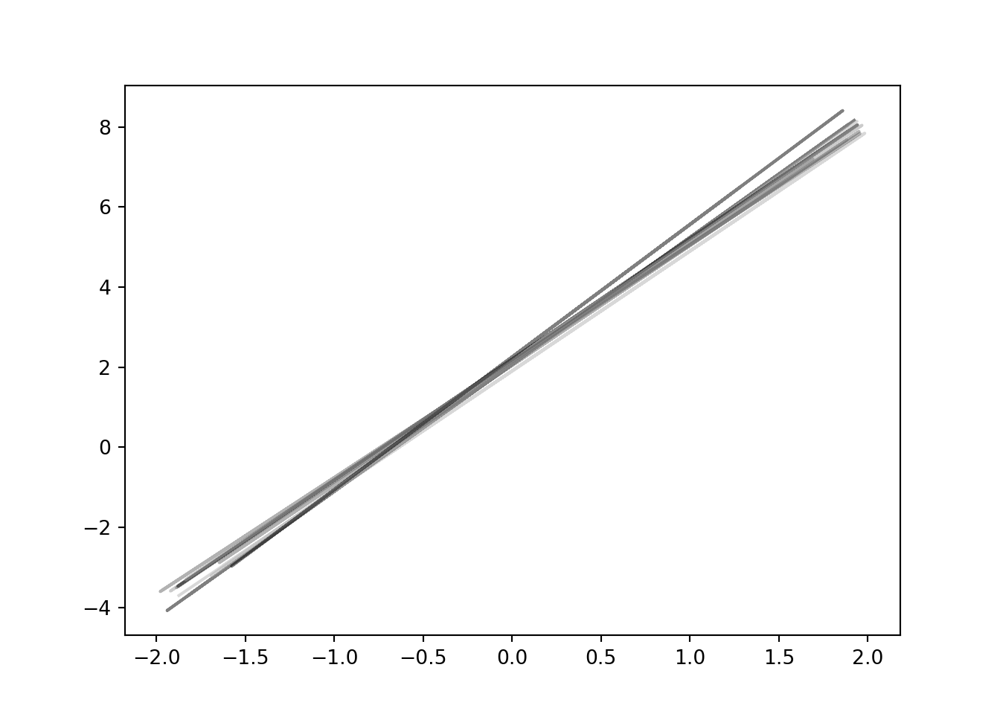

Enkel regresjon
Inføring i regresjon
Regresjon handler enkelt og greit om å finne sammenheng i mellom to eller flere observasjoner. Ofte møter vi situasjoner der vi kan måle en rekke fenomener, for eksempel hvordan høyden til befolkningen har økt med tiden. Med en passende modell kan vi muligens forutse hvor høye vi blir fremtiden osv. Jeg har hentet noe data fra SSB over dette, nemlig gjennomsnittshøyden til værnepliktige siden 1900:
import pandas as pd
import matplotlib.pyplot as plt
import numpy as np
plt.style.use('grayscale')
df = pd.read_csv('height.csv', header=None)
df.head()>> 0 1 2 3 4 5 6 7 8 9
>> 0 1900 170.0 16.9 28.0 30.9 18.0 5.4 20.8 Na Na
>> 1 1910 171.0 12.8 26.0 32.3 20.4 6.8 21.7 Na Na
>> 2 1920 171.4 12.3 24.4 32.6 21.3 7.7 21.7 Na Na
>> 3 1930 172.8 8.4 20.0 32.2 25.8 10.6 23.0 Na Na
>> 4 1931 172.6 8.7 20.3 31.8 25.1 11.0 23.1 Na NaVi kan nå hente ut første kolonne; årstall, og andre kolonne; snitthøyde og grafe de mot hverandre
year = df.iloc[:, 0].to_numpy()
height = df.iloc[:, 1].to_numpy()
plt.scatter(year, height)Her ser vi en tydelig trend, men hvordan kan vi uttrykke den best mulig, og hvordan kan vi predikere fremtidige årstall? Før vi begir oss ut på denne vanskelige oppgaven kan det være lurt å gjennomgå et konstruert eksempel. Et eksempel der vi kjenner fasiten, altså den reelle sammenhengen. Med fasiten simulerer vi deretter at vi gjør noen tilfeldige målinger, og til slutt bruker vi de målingene til å prøve å gjennfinne fasiten.
Vi velger den enkleste funksjonen tenkelig, nemlig en lineær funksjon. De kan altids uttrykkes på formen:
\[ f(x) = a + bx \] Det betyr at så lenge vi vet (eller gjetter informert) at fasiten er lineær, trenger vi kun å finne de to parameterne \(a\) og \(b\). I praksis ser dette slik ut:
# antall observasjoner vi trekker
n_samples = 25
# grensene for plotting
xmin = -2
xmax = 2
xplot = np.linspace(xmin, xmax, 100) # xverider brukt til plotte funksjoner
# spredning på støy
sigma = 1
def f(x):
return 2 + 3*x
def x_sample():
return np.random.uniform(xmin, xmax, n_samples)
def add_noise():
return np.random.normal(0, sigma,n_samples)
xs = x_sample()
ys = f(xs) + add_noise()
plt.scatter(xs, ys)Denne grafen er git ved funksjoen:
\[ f(x) = 2 + 3x + \epsilon \] Der \(\epsilon\) er et normalfordelt støyledd med gjennomsnitt \(\mu = 0\) og standardavvik \(\sigma = 1\).
Formlene vi bruker for å finne \(a\) og \(b\) er som følger:
\[ \begin{align} \hat{b} &= \frac{\sum(x_i - \overline{x})(y_i - \overline{y})}{\sum(x_i - \overline{x})^2}\\ \hat{a} &= \overline{y} - \hat{b}\overline{x} \end{align} \]
Linjen over en variabel, som f.eks. \(\overline{x}\) betyr gjennomsnittet til \(x\). Den store greske bokstaven \(\Sigma\) betyr summen over alle \(x\)-er eller \(y\)-er (indeksert med i). Vi ser atlså at vi finner parameteren \(b\) ved å dele summen av det sentraliserte produktet av \(x\)-ene og \(y\)-ene over summen av den de sentraliserte og kvadrerte \(x\)-ene. A finner vi deretter ved å trekke b ganget med snittet til \(x\)-ene fra snittet til \(y\)-ene. I kode ser dette slik ut:
def b_approx(x, y):
return np.dot(x - x.mean(), y - y.mean()) / np.dot(x - x.mean(), x - x.mean())
def a_approx(x, y, b):
return y.mean() - b*x.mean()Vi kan nå teste koden på dataen vi plottet over:
bhat = b_approx(xs, ys)
ahat = a_approx(xs, ys, bhat)
print(f'a ={ahat: .2f}, b ={bhat: .2f}')>> a = 1.69, b = 2.78Vi ser at dette er ganske nærme det faktiske svaret. Vi kan plotte linjen også på følgende måte:
def linear_function(a, b):
return lambda x: a + b*x
regression_line = linear_function(ahat, bhat)
plt.scatter(xs, ys)
plt.plot(xs, regression_line(xs) )
Denne linjen er tilfeldig. Det er viktig å legge merke til. Selv om den passer dataen veldig godt, kunne den vært anderledes. Vi kan gjøre den samme simuleringen flere ganger og se hvordan linjene blir. For det lager vi en hjelpefunksjon som finner \(a\) og \(b\) og returnerer linjen:
def regression(x, y):
b = b_approx(x, y)
a = a_approx(x, y, b)
return linear_function(a, b)
for i in range(10):
xs = np.random.uniform(-2, 2, n_samples) # trekker 100 tilfed
ys = f(xs) + np.random.normal(0,1,n_samples)
regression_line = regression(xs, ys)
plt.plot(xs, regression_line(xs), alpha=0.5)
plt.show()
Vi ser at det er noe variasjon. Vi plotter enda flere, si tusen linjer:
for i in range(1000):
xs = np.random.uniform(-2, 2, n_samples) # trekker 100 tilfed
ys = f(xs) + np.random.normal(0,1,n_samples)
regression_line = regression(xs, ys)
plt.plot(xs, regression_line(xs), alpha=0.01)
plt.plot(xplot, f(xplot), c='red')
plt.show()Flere funksjonsfamilier
Her er den røde linjen den sanne funksjonen. Alt i alt ser det ut som om linjene vi finner er veldig gode, men det er kanskje ikke så rart når vi startet med en perfekt lineær sammenheng. I virkeligheten er dette ofte ikke tilfelle, men lineære modeller kan likevel passe veldig godt. For å vise dette skal vi se på noen flere funksjoner:
def g(x):
return 0.4*(x+3)**2 - 1.5
def h(x):
return np.exp(0.15* x+3) - 18
def i(x):
return 16/(1 + np.exp(-x)) - 6
fig, axs = plt.subplots(2, 2)
axs[0, 0].plot(xplot, f(xplot))
axs[0, 0].set_title('lineær')
axs[0, 1].plot(xplot, h(xplot))
axs[0, 1].set_title('kvadratisk')
axs[1, 0].plot(xplot, g(xplot))
axs[1, 0].set_title('eksponensiell')
axs[1, 1].plot(xplot, i(xplot))
axs[1, 1].set_title('logit')
# Hide x labels and tick labels for top plots and y ticks for right plots.
for ax in axs.flat:
ax.label_outer()
plt.show()
Her ser vi en lineær funksjon, en kvadratisk funksjon, en eksponensiell funksjon og en siste funksjon som kalles logit. Dette er alle vanlige relasjoner å møte på i virkeligheten, og alle kan minne likne på lineære funskjoner om de er zoomet rikgit inn (som de er i dette tilfellet). Hvis vi trekker tilfeldig fra disse funksjonene og sammenlikner er det veldig vanskelig å sille de fra hverandre:
fig, axs = plt.subplots(2, 2)
xs = x_sample()
ys = f(xs) + add_noise()
axs[0, 0].scatter(xs, ys)
axs[0, 0].set_title('lineær')
xs = x_sample()
ys = g(xs) + add_noise()
axs[0, 1].scatter(xs, ys)
axs[0, 1].set_title('kvadratisk')
xs = x_sample()
ys = h(xs) + add_noise()
axs[1, 0].scatter(xs, ys)
axs[1, 0].set_title('eksponensiell')
xs = x_sample()
ys = i(xs) + add_noise()
axs[1, 1].scatter(xs, ys)
axs[1, 1].set_title('logit')
# Hide x labels and tick labels for top plots and y ticks for right plots.
for ax in axs.flat:
ax.label_outer()
plt.show()Regresjon på høydedataen
Hvis vi nå prøver denne funksjonen på høydedataen får vi følgende resultat:
bhat =b_approx(year, height)
ahat =a_approx(year, height, bhat)
regression_line = linear_function(ahat, bhat)
print(f'a: {ahat}, b: {bhat}')>> a: -16.980420722183737, b: 0.09882216258914854plt.scatter(year, height)
plt.plot(year, regression_line(year))Vi ser at linjen passer nokså godt, men det virker ikke som om relasjonen vi leter etter er lineær. Det er flere grunner til å betvile denne antaglesen før vi i det hele tatt ser på dataen. For det første vil en lineær trend på et tidspunkt krysse null, men å tillate at snitthøyden er null er absurd. En lineær trend vil også antyde at vi kan vokse grenseløst høye, som også er lite trolig, dog ikke like absurd. Mer konkret kan vi tolke parameterne \(a\) og \(b\), og de sier at i år 0 var snitthøyden minus 16 centimeter og at snitthøyden vokser med én millimeter per år.
Vi kan prøve å tilpasse et polynom, det er en funksjon av n-te grad. Etter litt prøving og feiling ser det ut som en femtegradsfunksjon passer fint. Derimot kan vi i mye mindre grad tolke funksjonen utenfor datapunktene (dette kalles ekstrapolering)
from sklearn.linear_model import Ridge
from sklearn.preprocessing import PolynomialFeatures
from sklearn.pipeline import make_pipeline
X = year.reshape(-1, 1)
Xplot = np.linspace(year[0], year[-1], 100).reshape(-1, 1)
y = height
# plot training points
plt.scatter(year, height, label="Data points")
model = make_pipeline(PolynomialFeatures(5), Ridge(alpha=0.01)).fit(X, y)>> /opt/homebrew/lib/python3.9/site-packages/sklearn/linear_model/_ridge.py:156: LinAlgWarning: Ill-conditioned matrix (rcond=4.34857e-35): result may not be accurate.
>> return linalg.solve(A, Xy, sym_pos=True, overwrite_a=True).Typlot = model.predict(Xplot)
plt.plot(Xplot, yplot, label=f"degree {5}")
plt.legend()Hvis vi prøver på nytt å predikere hvor høye folk var i år null vil vi få et veldig rart svar:
print(f'Predikert høyde i år 0: {int(model.predict( np.array([0]).reshape(1,-1))[0])} cm')>> Predikert høyde i år 0: 771785 cm